library(ggzoomer)
library(ggplot2)
showtext::showtext_auto()Each ggzoomer theme is named after an aesthetic, trend, or object from Gen Z internet culture. Every palette follows how the topic looks to Gen Z online: its colors, objects, and materials. Each section explains why the topic is included, links its Wikipedia article (or the closest article when the topic doesn’t have one), and shows a freely licensed image from that article with simulated data to match.
Themes with a dark background also have a light version. Set mode = "light" to get a light background with darker text and marks. Dark is the default. Each dark theme’s section below shows both versions.
Air fryer
theme_airfryer(): Air fryers are small countertop convection ovens that blow hot air around food (see Convection oven on Wikipedia). Air fryers went from a novelty to a common kitchen appliance in the 2020s. Philips launched the first Airfryer in 2010, and by 2018 people used the name for any brand. About 36% of US households had a convection oven in 2020. By 2023, an estimated 60% had one. In a 2024 UK study, one in five people said the air fryer was the cooking device they used most.
The palette follows the colors the popular Crispi air fryer comes in: Cherry Crush, Sage Green, Electric Cobalt, Butter Yellow, Cyberspace navy, and Frosted Lilac on Stone. The image shows an air fryer basket of reheated potatoes on a kitchen counter.
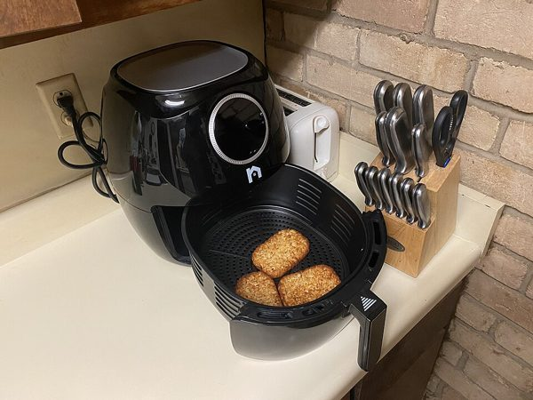

set.seed(2020)
fryer <- data.frame(food = rep(c("Fries", "Wings", "Nuggets", "Veggies"), each = 80))
fryer$minutes <- round(rnorm(320, mean = c(Fries = 15, Wings = 22, Nuggets = 10, Veggies = 12)[fryer$food], sd = 2.5), 1)
ggplot(fryer, aes(x = food, y = minutes, fill = food)) +
geom_boxplot(show.legend = FALSE) +
labs(title = "Air fryer cook times", caption = "Simulated data", x = NULL, y = "Minutes") +
theme_airfryer(base_size = 13)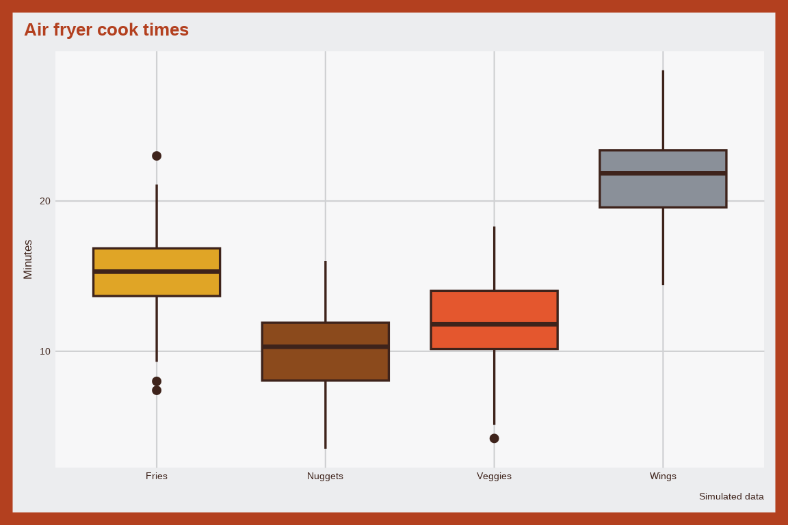
ASMR
theme_asmr(): ASMR (autonomous sensory meridian response) is the tingling some people feel while watching whisper, tapping, and crinkle videos (see ASMR on Wikipedia). ASMR is the calm, tingling feeling some people get from whispers, tapping, and other quiet sounds. YouTube turned it into a genre. Many ASMR videos show one person whispering or tapping straight into the camera. The Louvre invited the channel PARIS ASMR to film there in 2019, and the first major ASMR exhibition opened in Sweden in 2020. Gibi ASMR, one of YouTube’s top ASMR creators, started her channel in 2016 and reached one million subscribers about a year after college.
The palette follows the set behind Gibi ASMR’s videos: a deep indigo backdrop strung with blue and white fairy lights, a lilac top, red and green bokeh, warm gold light, and pink nails. The image shows a body map showing where ASMR tingles start and spread.
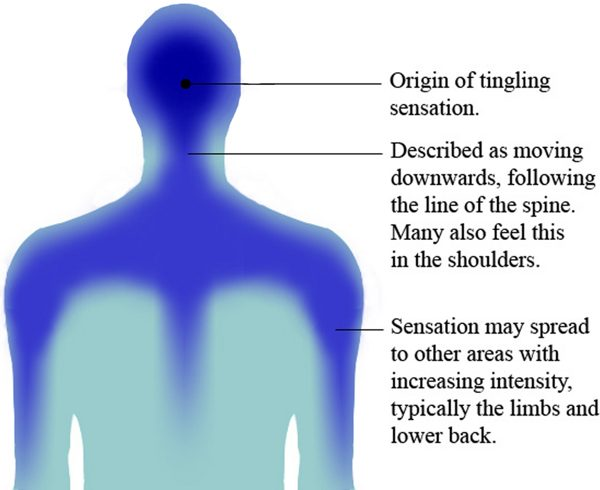

set.seed(2010)
asmr <- data.frame(trigger = rep(c("Whispering", "Tapping", "Crinkling"), each = 200))
asmr$minutes <- rlnorm(600, meanlog = c(Whispering = 3, Tapping = 2.6, Crinkling = 2.3)[asmr$trigger], sdlog = 0.5)
ggplot(asmr, aes(x = minutes, fill = trigger)) +
geom_density(alpha = 2/3) +
labs(title = "ASMR watch time", caption = "Simulated data", x = "Minutes watched", fill = NULL) +
theme_asmr(base_size = 13)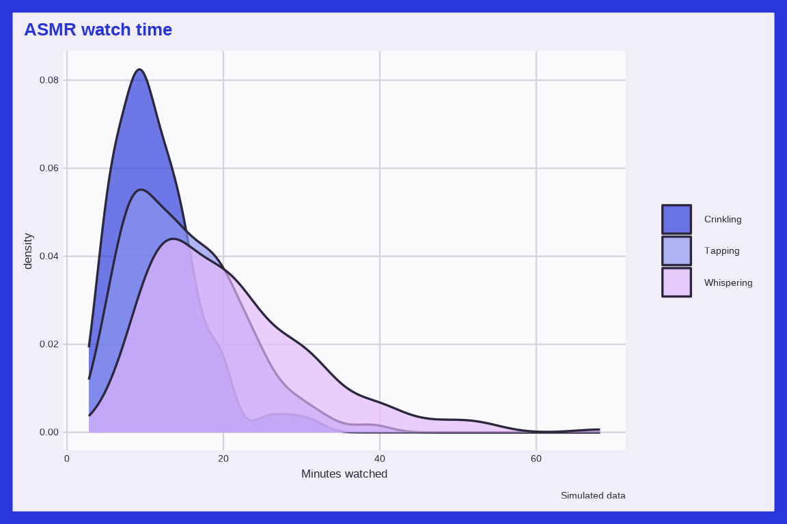
With mode = "light":
last_plot() + theme_asmr(base_size = 13, mode = "light")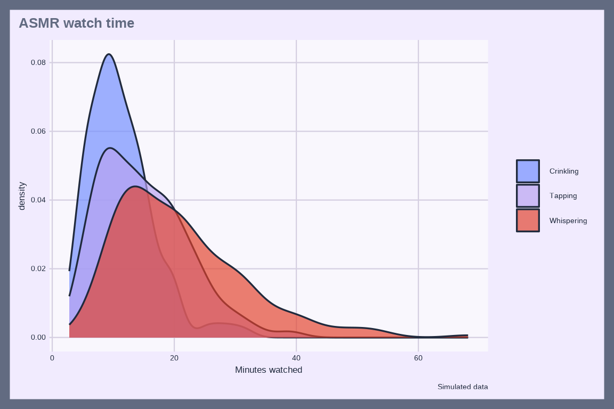
Axolotl
theme_axolotl(): Axolotls are Mexican salamanders that keep their gills for life and became an internet favorite (and a game mob) (see Axolotl on Wikipedia). The axolotl is a salamander that keeps its pink and white coloring, large eyes, and feathery gills into adulthood. Online, it stands for cuteness, aquatic pets, and staying young. Custom axolotl emojis often hold boba tea or hearts, or wear tiny hats. In 2017, it became the official emoji of Mexico City.
The palette follows the axolotl emoji: pink and white skin, deep pink feathery gills, big black eyes, and the boba tea, hearts, and aquarium water it often comes with. The image shows a wild type axolotl resting on gravel in an aquarium.
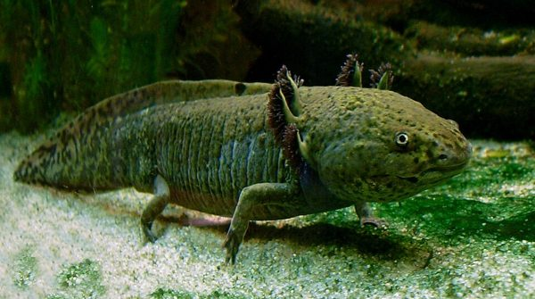

set.seed(1864)
axolotls <- data.frame(morph = rep(c("Wild type", "Leucistic", "Golden albino"), each = 120))
axolotls$length <- rnorm(360, mean = c("Wild type" = 23, Leucistic = 21, "Golden albino" = 20)[axolotls$morph], sd = 3)
ggplot(axolotls, aes(x = morph, y = length, fill = morph)) +
geom_violin(alpha = 2/3, show.legend = FALSE) +
labs(title = "Axolotl lengths", caption = "Simulated data", x = NULL, y = "Length (cm)") +
theme_axolotl(base_size = 13)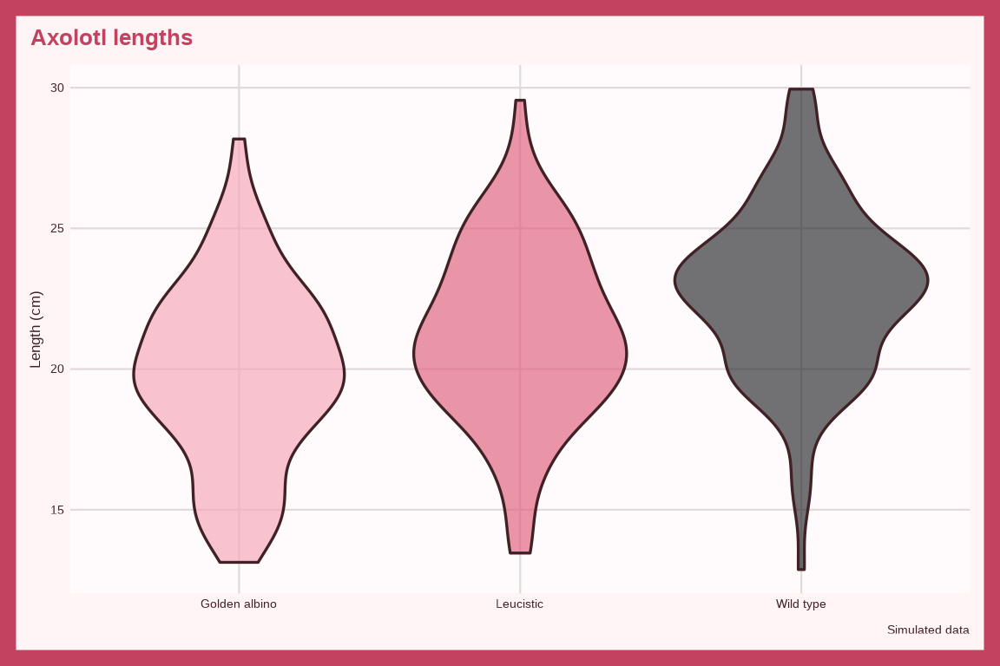
Boba
theme_boba(): Bubble tea (boba) is a Taiwanese tea drink with chewy tapioca pearls (see Bubble tea on Wikipedia). Boba is known for its vibrant, layered colors, cups slick with condensation, and swirling tapioca pearls or colorful popping boba. That look makes it one of the most Instagrammable drinks around. For Gen Z, a photo of a boba cup works as a kind of visual currency.
The palette follows the vibrant, layered drinks: black tapioca pearls, milk tea, taro, strawberry, matcha, and mango popping boba. The image shows a cup of milk tea with black tapioca pearls.
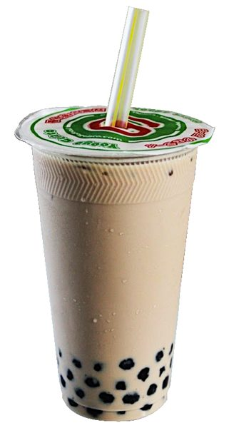

set.seed(1980)
boba <- data.frame(flavor = sample(c("Classic milk", "Taro", "Brown sugar", "Matcha", "Mango"), 400, replace = TRUE,
prob = c(0.3, 0.2, 0.25, 0.15, 0.1)))
ggplot(boba, aes(x = flavor, fill = flavor)) +
geom_bar(show.legend = FALSE) +
labs(title = "Boba orders", caption = "Simulated data", x = NULL, y = "Orders") +
theme_boba(base_size = 13)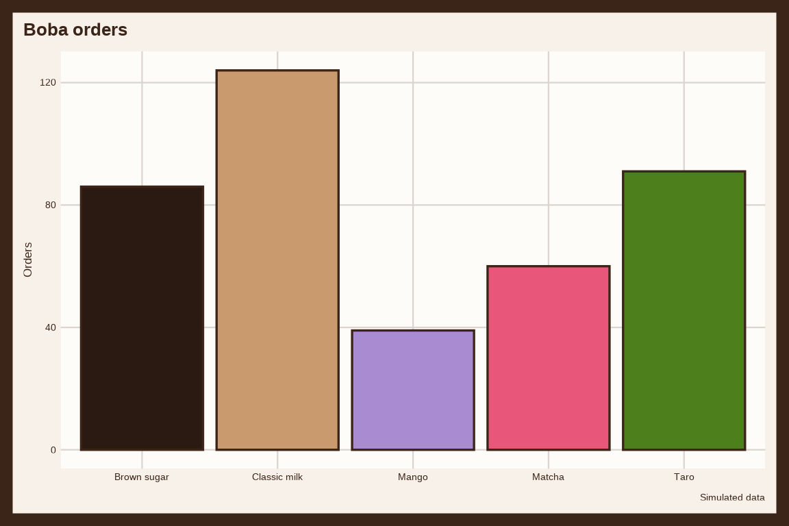
Capybara
theme_capybara(): Capybaras are the largest living rodents and a famously calm internet mascot (see Capybara on Wikipedia). Capybaras became a figure in meme culture in the 2020s. A common meme format pairs a capybara with the song “After Party” by Don Toliver, and a song about capybaras became a TikTok hit in 2022. Capybaras also stand for calm. People see them as unflappable, and their personalities have been called “buddha-like.”
The palette follows the “After Party” single cover that the article’s capybara memes pair with: a purple lowrider hearse, lavender chrome, a near black shadow, the gray signpost and ground, a mauve HEAVEN sign, and the hand lettered title, all on cream paper. The image shows a capybara standing on a sandy riverbank.

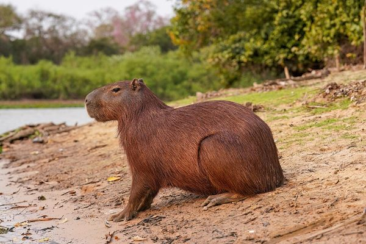

set.seed(1766)
capys <- data.frame(hour = 0:23)
capys$Grazing <- round(20 + 15 * sin((capys$hour - 6) / 24 * 2 * pi) + rnorm(24, 0, 2))
capys$Swimming <- round(10 + 8 * sin((capys$hour - 10) / 24 * 2 * pi) + rnorm(24, 0, 2))
capys <- reshape(capys, direction = "long", varying = c("Grazing", "Swimming"), v.names = "minutes",
timevar = "activity", times = c("Grazing", "Swimming"))
ggplot(capys, aes(x = hour, y = minutes, colour = activity)) +
geom_line(linewidth = 1) +
labs(title = "A capybara's day", caption = "Simulated data", x = "Hour", y = "Minutes", colour = NULL) +
theme_capybara(base_size = 13)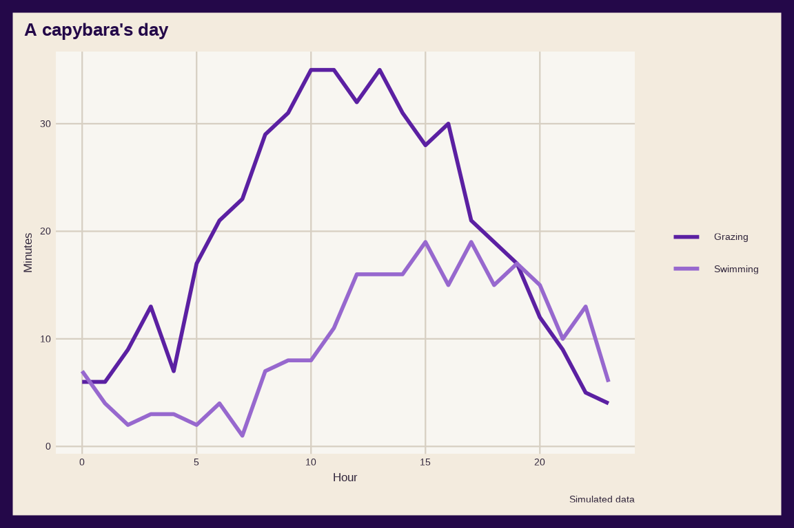
Clean girl
theme_cleangirl(): The clean girl aesthetic is a minimal beauty and wellness trend built on slicked back hair, a no makeup makeup look, and a limited palette (see Clean girl aesthetic on Wikipedia). The clean girl aesthetic became a viral TikTok and Instagram trend in 2021 and 2022. It moved beauty away from the heavy full glam of the late 2010s and toward a curated, wellness focused identity. Critics say the effortless look takes expensive upkeep and borrows styles from Black and Latina women. By 2025, much of Gen Z had moved on to messier, more maximalist looks.
The palette follows the polished, no makeup look: delicate gold jewelry, an iced matcha latte, fluffy brown brows, glazed dewy skin, tinted gloss, and neutral toned clothing. The image shows a single small gold hoop earring.
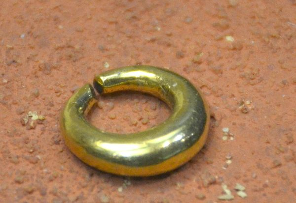

set.seed(2022)
routine <- data.frame(step = rep(c("Cleanser", "Serum", "Moisturizer", "Sunscreen"), each = 150))
routine$minutes <- rgamma(600, shape = c(Cleanser = 4, Serum = 2, Moisturizer = 3, Sunscreen = 2)[routine$step], rate = 2)
routine$step <- factor(routine$step, levels = c("Cleanser", "Serum", "Moisturizer", "Sunscreen"))
ggplot(routine, aes(x = minutes, fill = step)) +
geom_histogram(bins = 30) +
labs(title = "Morning routine", caption = "Simulated data", x = "Minutes per step", fill = NULL) +
theme_cleangirl(base_size = 13)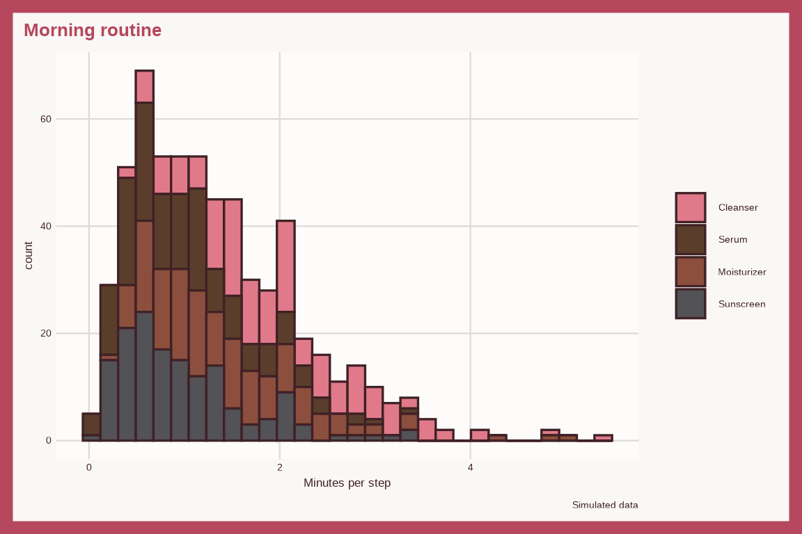
Coastal grandmother
theme_coastal(): Coastal grandmother is a relaxed style of linen, beach houses, and seaside cooking (see 2020s in fashion on Wikipedia). The coastal grandmother look borrows from the heroines of Nancy Meyers films like Something’s Gotta Give. Gen Z and millennials treat it as an escape from stress and burnout, a life of leisure instead of constant striving. Gen Z makes it more accessible with texture and vintage pieces; no beach house required. A younger, more casual version is called coastal granddaughter.
The palette follows the Nancy Meyers wardrobe: soft blue, navy, beige linen, camel cashmere, driftwood gray, and sea glass green on cream. The image shows a vintage postcard of the bath houses on Craigville Beach, Cape Cod.
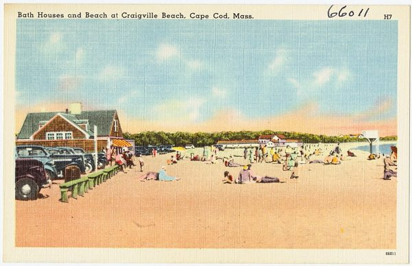
.jpg){kind=link}
set.seed(2022)
beach <- data.frame(month = factor(rep(month.abb[5:9], each = 3), levels = month.abb[5:9]),
activity = rep(c("Beach walks", "Farmers market", "Cooking"), 5))
beach$hours <- round(runif(15, 4, 20))
ggplot(beach, aes(x = month, y = hours, fill = activity)) +
geom_col() +
labs(title = "Summer on the coast", caption = "Simulated data", x = NULL, y = "Hours", fill = NULL) +
theme_coastal(base_size = 13)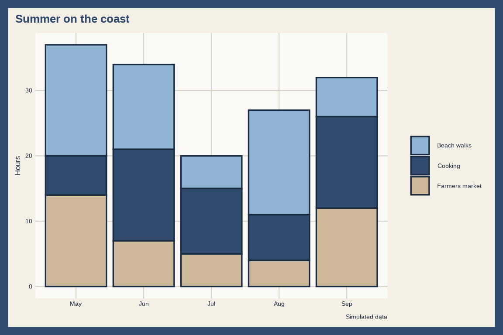
Coquette
theme_coquette(): The coquette aesthetic is a 2020s fashion trend of bows, lace, ribbons, and pastels (see Coquette aesthetic on Wikipedia). Coquette is a 2020s Gen Z trend that reclaims hyper femininity as self expression. Unlike the girlboss era, it treats softness as strength. On TikTok, #coquetteaesthetic has passed 18 billion views, and Lana Del Rey, Sabrina Carpenter, and Jennie have all embraced the look. Critics call it regressive, while fans see a celebration of vulnerability and individuality.
The palette follows the hyper feminine wardrobe: ballet pink bows, ribbon red hearts, pastel lavender and baby blue, pearls, and deep cherry. The image shows an 1880s tobacco card portrait of Marie Antoinette.
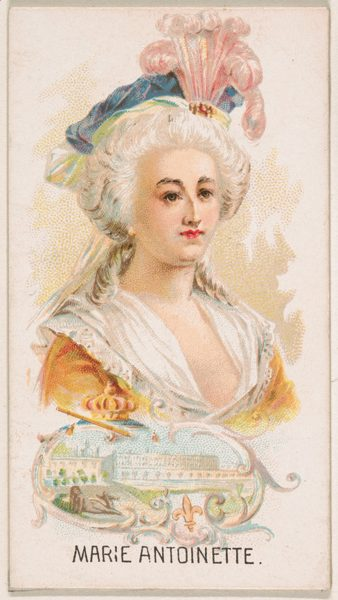
_issued_by_Kinney_Bros._MET_DPB872310.jpg){kind=link}
set.seed(1770)
bows <- data.frame(fabric = sample(c("Satin", "Velvet", "Lace", "Tulle", "Chiffon"), 300, replace = TRUE),
item = sample(c("Hair bow", "Ribbon", "Lace top"), 300, replace = TRUE))
ggplot(bows, aes(x = item, fill = fabric)) +
geom_bar(position = "dodge") +
labs(title = "Coquette closet", caption = "Simulated data", x = NULL, y = "Items", fill = NULL) +
theme_coquette(base_size = 13)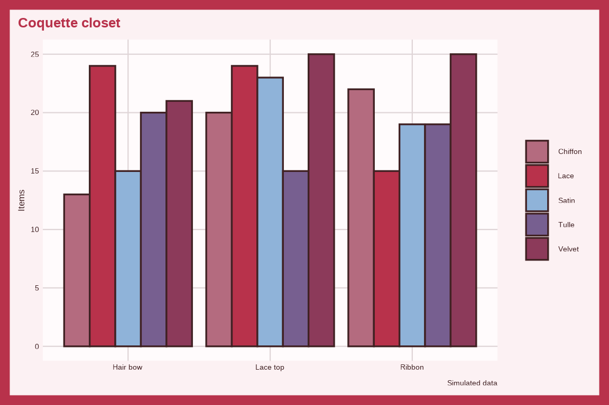
Cottagecore
theme_cottagecore(): Cottagecore is an internet aesthetic that romanticizes rural life: gardens, baking, and handmade things (see Cottagecore on Wikipedia). Cottagecore gives Gen Z an escape from hustle culture, consumerism, and the stress of modern technology. It offers calm and a sense of control in a chaotic world. It also fits Gen Z’s values: thrifting, slow fashion, and eco consciousness. The aesthetic reimagines rural life as a safe, inclusive space, often blended with queer and feminist ideals.
The palette follows the pastoral palette of greens, browns, and creams with its motifs: sage, toadstool red, bee yellow, bark brown, wildflower lilac, and moss. The image shows Anne Hathaway’s Cottage, a thatched cottage and garden in Warwickshire.
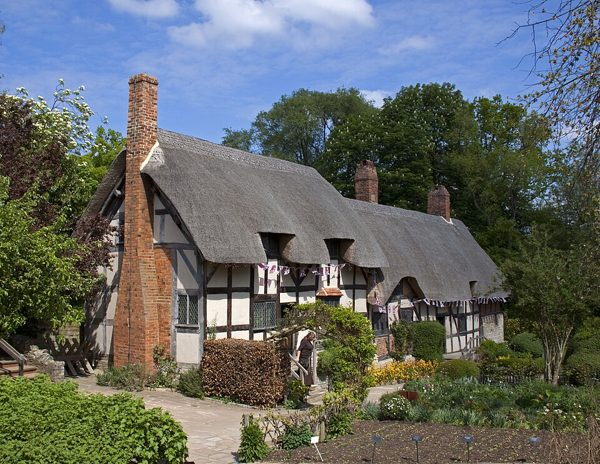
.jpg){kind=link}
set.seed(2018)
garden <- data.frame(week = rep(1:12, 3), crop = rep(c("Tomatoes", "Herbs", "Strawberries"), each = 12))
garden$harvest <- round(pmax(0, c(Tomatoes = 1.2, Herbs = 0.6, Strawberries = 0.9)[garden$crop] * garden$week + rnorm(36, 0, 1.5)), 1)
ggplot(garden, aes(x = week, y = harvest, colour = crop)) +
geom_line(linewidth = 1) +
geom_point() +
labs(title = "Cottage garden harvest", caption = "Simulated data", x = "Week", y = "Harvest (lbs)", colour = NULL) +
theme_cottagecore(base_size = 13)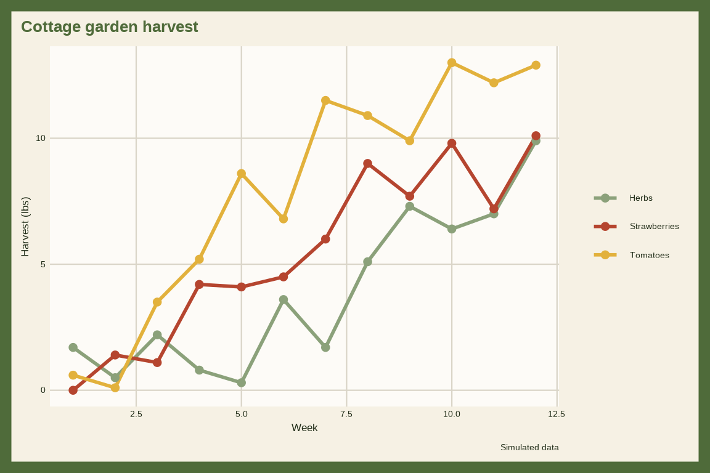
Dark academia
theme_darkacademia(): Dark academia is an internet aesthetic built around old libraries, tweed, and classic literature (see Dark academia on Wikipedia). Dark academia spread through Tumblr and TikTok. Tumblr’s 2021 year in review ranked it the platform’s second most popular aesthetic, and about 48% of Tumblr users are Gen Z. Commentators link its appeal to digital fatigue and a hunger for reflection and an intellectual identity. Critics point out that it has since been sold back as a lifestyle brand.
The palette follows a dim library with black coffee: parchment, brown tweed, burgundy, forest green, charcoal, and dark oak. The image shows a Gothic spiral staircase inside St. Barbara’s Church in Kutna Hora.

set.seed(1891)
books <- data.frame(genre = rep(c("Poetry", "Gothic novels", "Philosophy", "Greek myths"), each = 100))
books$pages <- round(rnorm(400, mean = c(Poetry = 120, "Gothic novels" = 380, Philosophy = 260, "Greek myths" = 320)[books$genre], sd = 50))
ggplot(books, aes(x = pages, y = genre, fill = genre)) +
geom_boxplot(show.legend = FALSE) +
labs(title = "The reading list", caption = "Simulated data", x = "Pages", y = NULL) +
theme_darkacademia(base_size = 13)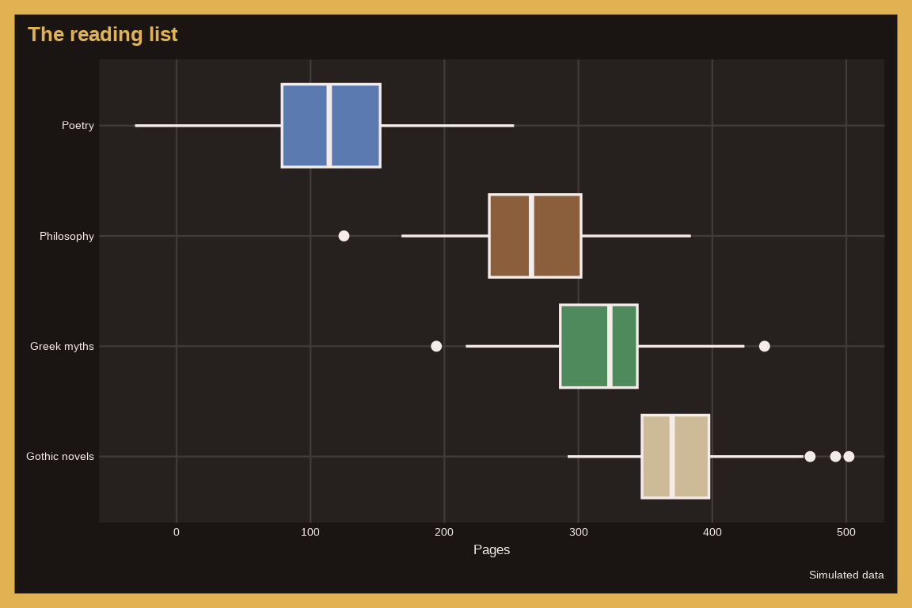
With mode = "light":
last_plot() + theme_darkacademia(base_size = 13, mode = "light")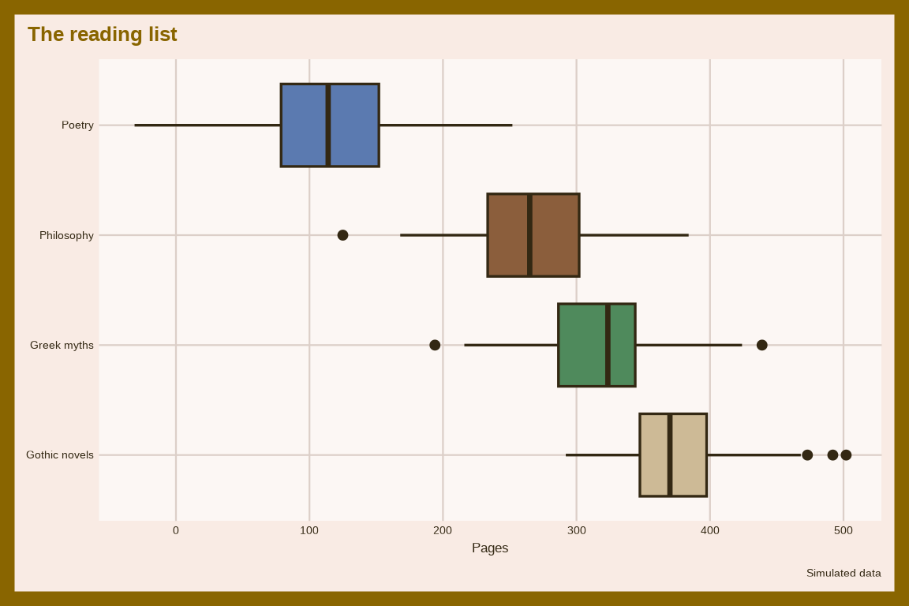
Digicam
theme_digicam(): Digital point and shoot cameras from the 2000s are back for their flash heavy, slightly blurry photos (see Digital camera on Wikipedia). Gen Z revived early 2000s digital cameras around 2022 on TikTok and Instagram. Many pulled them out of their parents’ drawers or bought them secondhand. The grainy, flash heavy shots feel more authentic than heavily processed phone photos. There is nostalgia, too: many of these users grew up being photographed on the same cameras.
The palette follows flash heavy early 2000s photos against a dark background: a metallic silver body, the orange date stamp, LCD blue, candy pink, gunmetal, and flash white. The image shows the front and back of a Canon PowerShot A95.
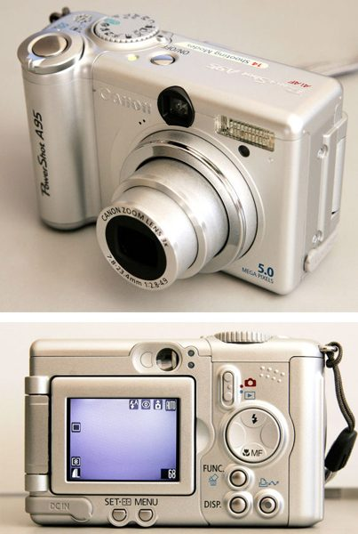

set.seed(2004)
cams <- data.frame(megapixels = round(runif(250, 2, 12), 1))
cams$price <- round(40 + 6 * cams$megapixels + rnorm(250, 0, 15))
cams$condition <- sample(c("Like new", "Used", "Scratched"), 250, replace = TRUE)
ggplot(cams, aes(x = megapixels, y = price, colour = condition)) +
geom_point(size = 2, alpha = 0.8) +
labs(title = "Resale digicams", caption = "Simulated data", x = "Megapixels", y = "Price ($)", colour = NULL) +
theme_digicam(base_size = 13)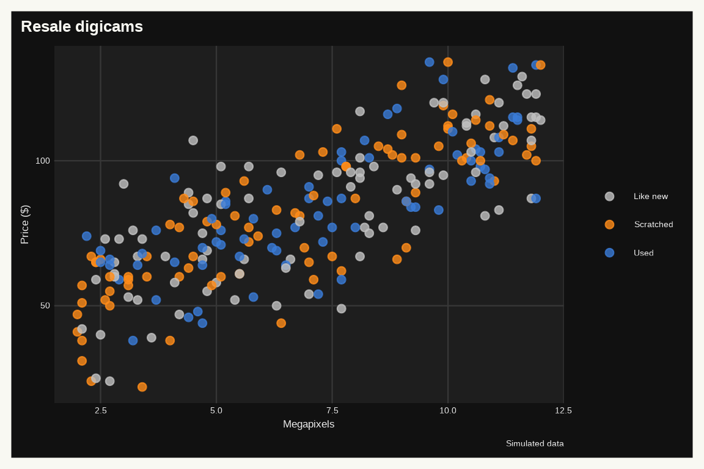
With mode = "light":
last_plot() + theme_digicam(base_size = 13, mode = "light")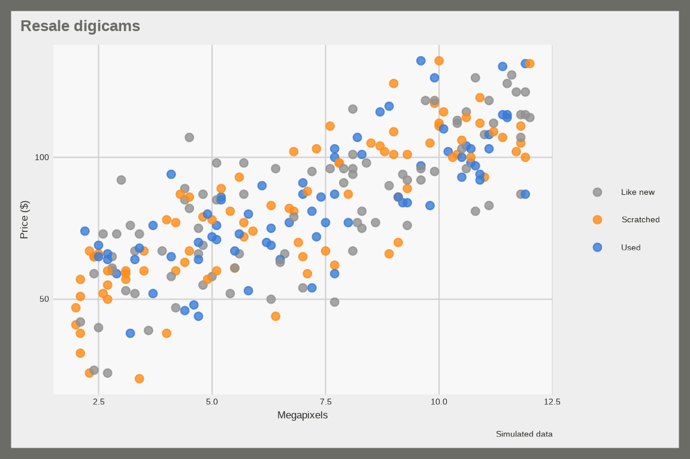
Doomscroll
theme_doomscroll(): Doomscrolling is spending far too long scrolling through upsetting or endless feeds (see Doomscrolling on Wikipedia). Doomscrolling is endlessly scrolling bad news, usually late at night. A 2024 study found that 53% of Gen Z say they doomscroll, compared with about a third of Americans overall. Studies link the habit to stress and anxiety. It even spills into spending: Fortune reported in 2024 that Gen Z spent 21% more on holiday shopping to cope.
The palette follows a glowing phone in a dark room: screen glow blue, notification red, blue light, slate gray, breaking news red, and dim white. The image shows a thumb scrolling a phone screen in the dark.
.jpg){kind=link}
set.seed(2020)
scroll <- data.frame(hour = rep(0:23, 2), day = rep(c("Weekday", "Weekend"), each = 24))
scroll$minutes <- round(pmax(0, 25 + 20 * cos((scroll$hour - 23) / 24 * 2 * pi) + ifelse(scroll$day == "Weekend", 10, 0) + rnorm(48, 0, 4)))
ggplot(scroll, aes(x = hour, y = minutes, fill = day)) +
geom_area(alpha = 0.8, position = "identity") +
labs(title = "Late night doomscrolling", caption = "Simulated data", x = "Hour", y = "Minutes", fill = NULL) +
theme_doomscroll(base_size = 13)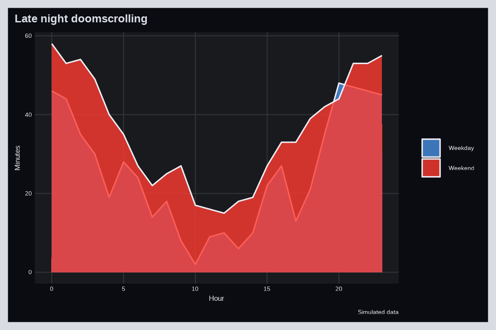
With mode = "light":
last_plot() + theme_doomscroll(base_size = 13, mode = "light")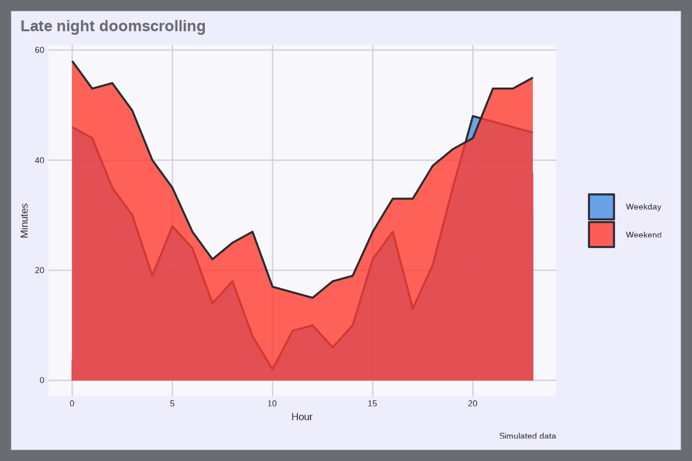
E-girl
theme_egirl(): E-girls and e-boys are a TikTok youth subculture that mixes emo, scene, and mall goth fashion with anime and K-pop style (see E-girl and e-boy subculture on Wikipedia). E-girls and e-boys reached the mainstream in 2019 through TikTok transformation videos. TikTok lacked Instagram’s polish and filters, so the look pushed back on perfectly edited influencer photos. In 2020, “e-girl style” was a top 10 trending fashion term on Google, and celebrities like Dua Lipa copied its bleached stripes. Designers at Celine later built collections around e-boy style.
The palette follows the e-girl look: neon pink and blue dyed hair, silver chains, a red band tee print, bleached blonde streaks, and anime pink blush on black. The image shows an e-girl’s striped sleeves, layered chain necklaces, and black band tee.
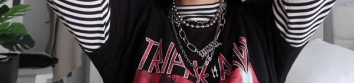

set.seed(2019)
looks <- data.frame(item = sample(c("Chains", "Striped sleeves", "Heart stamps", "Split dye hair", "Platform shoes"),
500, replace = TRUE, prob = c(0.3, 0.25, 0.2, 0.15, 0.1)))
looks$item <- factor(looks$item, levels = names(sort(table(looks$item))))
ggplot(looks, aes(y = item, fill = item)) +
geom_bar(show.legend = FALSE) +
labs(title = "E-girl transformation videos", subtitle = "What each look added",
caption = "Simulated data", x = "Videos", y = NULL) +
theme_egirl(base_size = 13)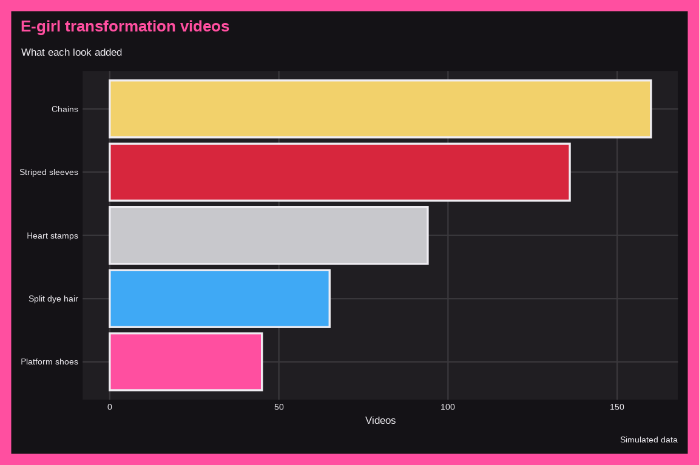
With mode = "light":
last_plot() + theme_egirl(base_size = 13, mode = "light")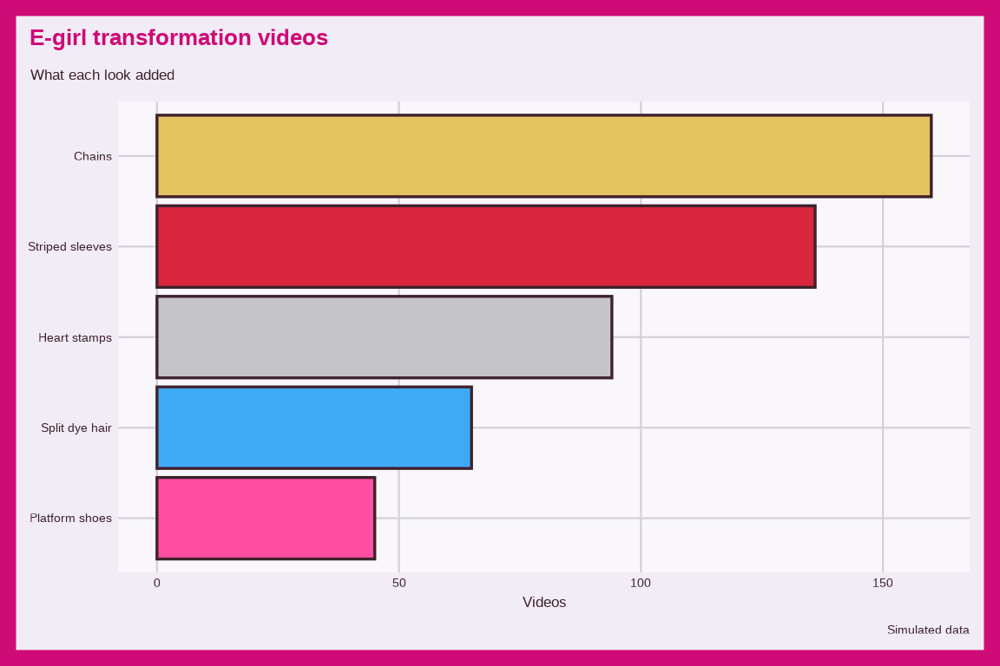
Fidget toy
theme_fidget(): Fidget toys (spinners, cubes, pop its, and bike chains) are small things to keep your hands busy (see Fidget toy on Wikipedia). Fidget spinners went viral in 2017. Fidget toys came back through TikTok videos of pop its, slime, and kinetic sand under hashtags like #FidgetToys. Gen Z uses them as screen free stress relief and as focus aids while studying or working. For some young adults, they are also simply nostalgic and fun.
The palette follows rainbow pop its and spinners: red, sunny yellow, lime, sky blue, purple, and hot pink. The image shows a bike chain fidget toy on lined paper.
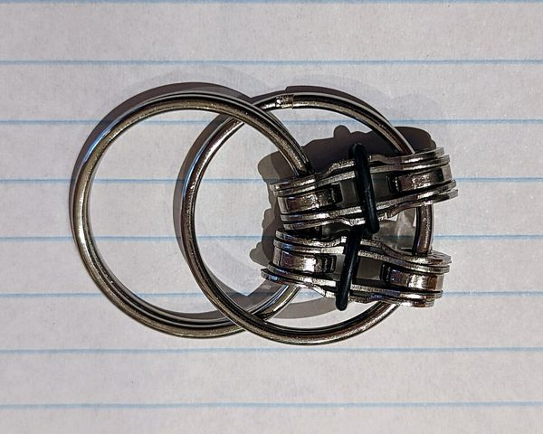

set.seed(2017)
spins <- data.frame(toy = rep(c("Spinner", "Cube", "Pop it", "Bike chain"), each = 100))
spins$seconds <- rexp(400, rate = c(Spinner = 1 / 60, Cube = 1 / 30, "Pop it" = 1 / 45, "Bike chain" = 1 / 20)[spins$toy])
ggplot(spins, aes(x = toy, y = seconds, colour = toy)) +
geom_jitter(width = 0.2, alpha = 0.6, show.legend = FALSE) +
labs(title = "How long a fidget lasts", caption = "Simulated data", x = NULL, y = "Seconds") +
theme_fidget(base_size = 13)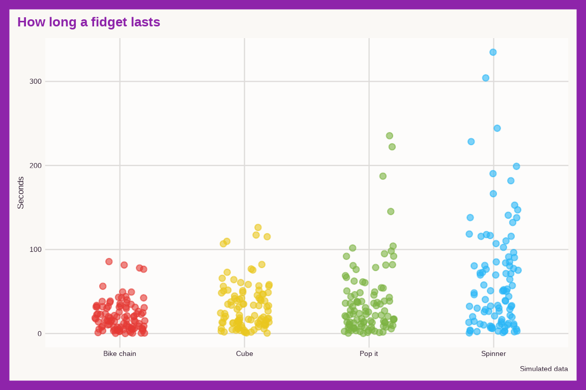
Frog
theme_frog(): Frogs are tailless amphibians and a cottagecore and goblincore icon (see Frog on Wikipedia). Gen Z’s favorite frog is Animal Crossing’s Froggy Chair, a green seat with a wide red mouth. Fans get Froggy Chair tattoos, bake Froggy Chair cakes, and print it on shirts. Frogcore extends the look to frog hoodies, rain boots, and slippers. Frog memes, from wholesome mental health posts to Arson Frog avatars, fill Gen Z feeds.
The palette follows Animal Crossing’s Froggy Chair and frog memes: froggy green, the wide red mouth, pond blue, Arson Frog blue, moss, and lily pad green on belly cream. The image shows a red eyed tree frog on a branch.
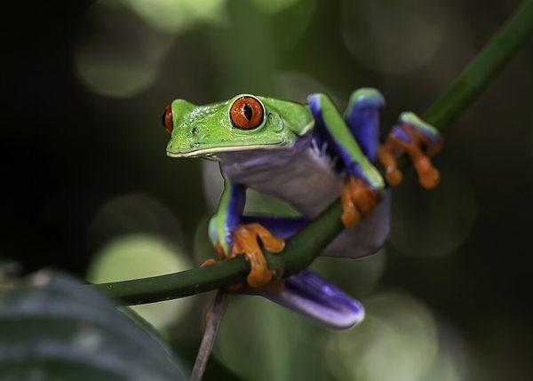
.jpg){kind=link}
set.seed(1758)
frogs <- data.frame(species = rep(c("Tree frog", "Bullfrog", "Poison dart"), each = 150))
frogs$jump <- rnorm(450, mean = c("Tree frog" = 1.5, Bullfrog = 2, "Poison dart" = 0.6)[frogs$species], sd = 0.3)
ggplot(frogs, aes(x = jump, fill = species)) +
geom_histogram(bins = 30, alpha = 0.8, position = "identity") +
labs(title = "Frog jumps", caption = "Simulated data", x = "Jump distance (m)", fill = NULL) +
theme_frog(base_size = 13)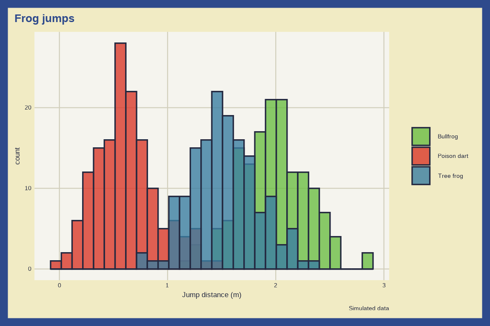
Frutiger Aero
theme_frutigeraero(): Frutiger Aero is the glossy design style of the mid 2000s: bubbles, water, grass, and blue skies (see Frutiger Aero on Wikipedia). Frutiger Aero came back on TikTok, Tumblr, and Reddit in 2022 and 2023. Gen Z links it to a digital childhood of MSN Messenger and Windows Vista. Essays frame it as optimism, a glossy contrast to flat, minimalist design and modern cynicism. Even design writers admit it’s hard to say exactly why it resonates.
The palette follows glossy Vista era glass and water: sky blue, grass green, deep ocean blue, lime, aqua, and bubble cyan. The image shows soap bubbles floating over sunlit grass.

set.seed(2007)
aero <- data.frame(year = 2004:2013)
aero$Gloss <- round(100 * plogis((aero$year - 2007) * 1.2) * (1 - plogis((aero$year - 2011) * 1.5)))
aero$Flat <- round(100 * plogis((aero$year - 2011) * 1.5))
aero <- reshape(aero, direction = "long", varying = c("Gloss", "Flat"), v.names = "share", timevar = "style", times = c("Gloss", "Flat"))
ggplot(aero, aes(x = year, y = share, colour = style)) +
geom_line(linewidth = 1.2) +
labs(title = "Gloss to flat", caption = "Simulated data", x = NULL, y = "Share of app icons (%)", colour = NULL) +
theme_frutigeraero(base_size = 13)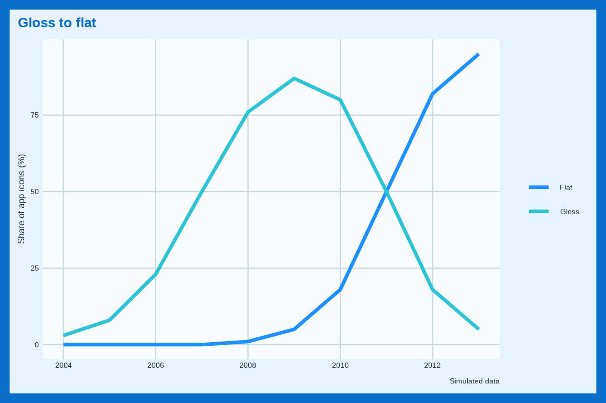
Goblincore
theme_goblincore(): Goblincore celebrates the less pretty side of nature: moss, mushrooms, snails, and found objects (see Goblincore on Wikipedia). Goblincore is a grungier, moodier cousin of cottagecore. It grew on TikTok in 2021 and ties into Gen Z’s interest in nature and sustainability. The trend pulls people away from screens and into forests and empty lots. Coverage reads its anti consumerist attitude and love of imperfection as a response to an unsettling, post pandemic world.
The palette follows mud, moss, and fungi in natural earth tones: moss green, toadstool red, mushroom beige, lichen sage, mud brown, and olive on soil black. The image shows a still life of old vases, a framed photo, and an animal skull.
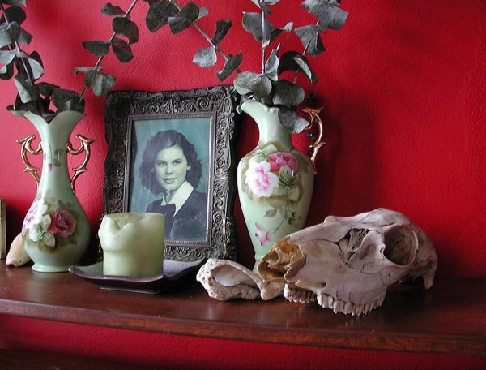

set.seed(2019)
finds <- data.frame(find = sample(c("Mushrooms", "Moss", "Snail shells", "Bones", "Shiny rocks"), 300, replace = TRUE,
prob = c(0.3, 0.25, 0.2, 0.1, 0.15)))
finds$find <- factor(finds$find, levels = names(sort(table(finds$find))))
ggplot(finds, aes(y = find, fill = find)) +
geom_bar(show.legend = FALSE) +
labs(title = "Forest walk finds", caption = "Simulated data", x = "Count", y = NULL) +
theme_goblincore(base_size = 13)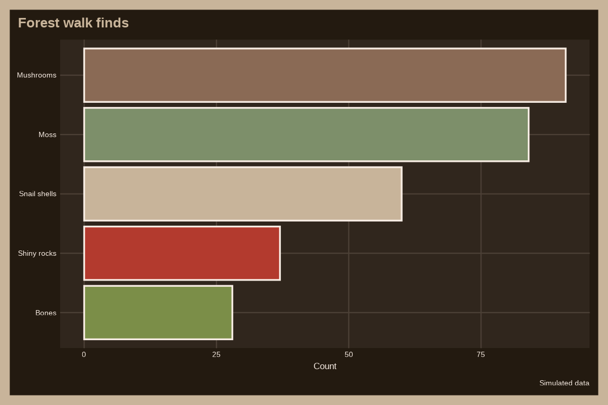
With mode = "light":
last_plot() + theme_goblincore(base_size = 13, mode = "light")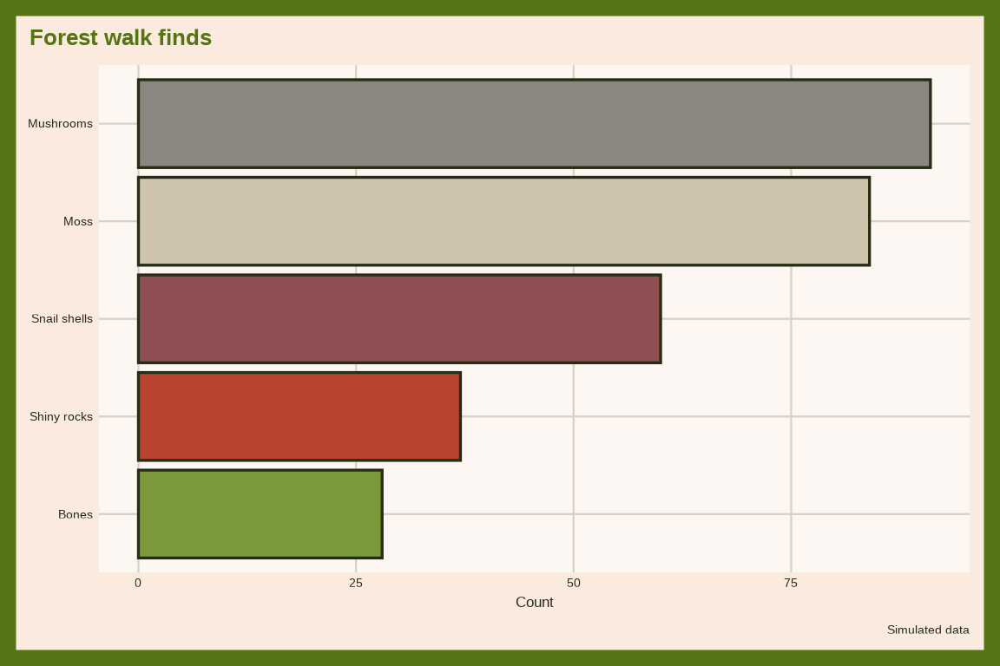
Gorpcore
theme_gorpcore(): Gorpcore is hiking gear (shell jackets, fleece, and trail shoes) worn as everyday streetwear (see Gorpcore on Wikipedia). Gorpcore turns outdoor gear into everyday style. It started out male led, but it has reached new heights on TikTok and Pinterest, especially among Gen Z women. Coverage ties it to the mental health benefits of time outside, tech fatigue after COVID, and Gen Z’s taste for sustainable goods. You don’t have to hike to wear it.
The palette follows technical outdoor gear worn as streetwear: safety orange, forest green, glacier blue, olive drab, trail tan, and stone gray, with black nylon. The image shows outdoor jackets and pants hanging in a store.
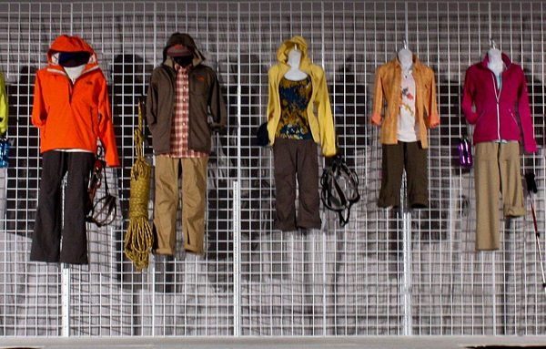
.jpg){kind=link}
set.seed(2017)
gear <- data.frame(item = rep(c("Shell jacket", "Fleece", "Trail shoes"), each = 120))
gear$price <- rlnorm(360, meanlog = log(c("Shell jacket" = 250, Fleece = 120, "Trail shoes" = 140)[gear$item]), sdlog = 0.25)
ggplot(gear, aes(x = price, fill = item)) +
geom_density(alpha = 2/3) +
labs(title = "Gorpcore price tags", caption = "Simulated data", x = "Price ($)", fill = NULL) +
theme_gorpcore(base_size = 13)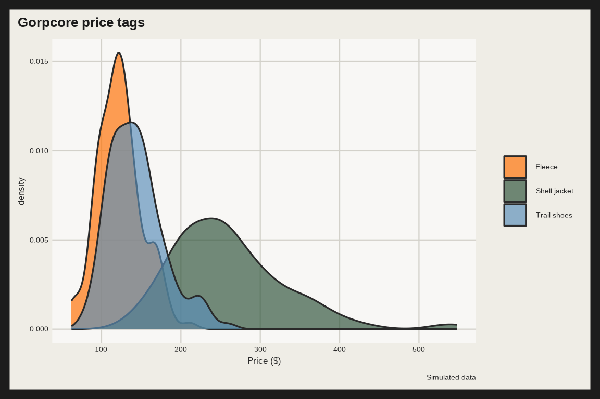
Group chat
theme_groupchat(): Group chats are where friends plan, share memes, and leave each other on read (see Online chat on Wikipedia). Group chats have become Gen Z’s third place, taking over from malls and coffee shops as the place to hang out. Their humor runs on memes that reference earlier memes. A 2025 Giphy survey found that about 89% of Gen Z and millennials check with their group chat before major life decisions. Snap found that nearly two thirds of Gen Z shoppers bought something after friends approved it in the chat.
The palette follows stacked chat bubbles and emoji: iMessage blue, SMS green, emoji yellow, heart red, typing gray, and dark mode black. The image shows a group conversation in a messaging app.

set.seed(2009)
chat <- data.frame(friend = rep(c("Ari", "Bo", "Cam", "Dev", "Eli"), each = 7), day = rep(1:7, 5))
chat$messages <- rpois(35, lambda = c(Ari = 60, Bo = 15, Cam = 35, Dev = 5, Eli = 25)[chat$friend])
ggplot(chat, aes(x = day, y = messages, fill = friend)) +
geom_col() +
labs(title = "Who carries the group chat", caption = "Simulated data", x = "Day", y = "Messages", fill = NULL) +
theme_groupchat(base_size = 13)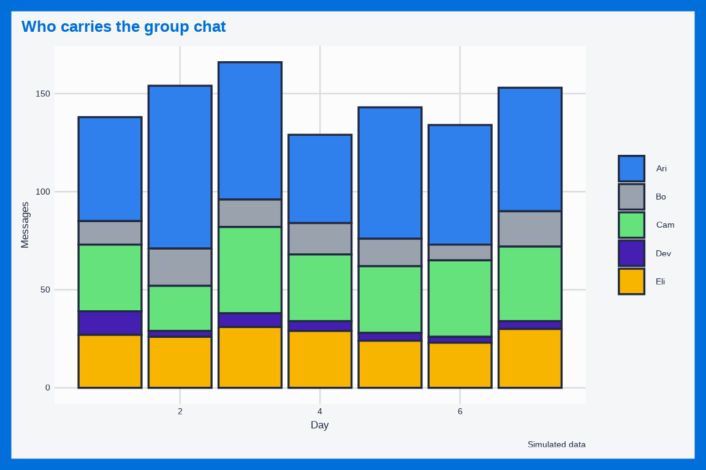
Indie sleaze
theme_indiesleaze(): Indie sleaze is the messy, flash photo party style of 2006 to 2012, now back on social media (see Indie sleaze on Wikipedia). Trend forecasters predicted an indie sleaze revival at the start of 2022, and TikTok amplified it. For younger Gen Z, it is nostalgia for an era they were too young to live through. The messy, flash lit look is also a counterpoint to the polished clean girl aesthetic and a break from hyper perfection.
The palette follows harsh flash photos in dark clubs: red eye red, neon rave pink, washed denim, flash white, smudged eyeliner gray, and worn leather. The image shows a singer performing under a stage light in 2007.
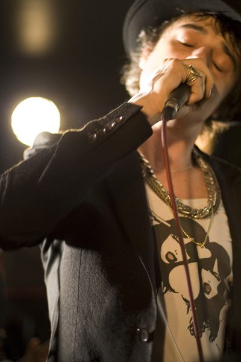

set.seed(2007)
shows <- data.frame(venue = rep(c("Basement", "Club", "Festival"), each = 150))
shows$minutes <- rnorm(450, mean = c(Basement = 35, Club = 55, Festival = 75)[shows$venue], sd = 10)
ggplot(shows, aes(x = venue, y = minutes, fill = venue)) +
geom_violin(show.legend = FALSE) +
labs(title = "Set lengths", caption = "Simulated data", x = NULL, y = "Minutes") +
theme_indiesleaze(base_size = 13)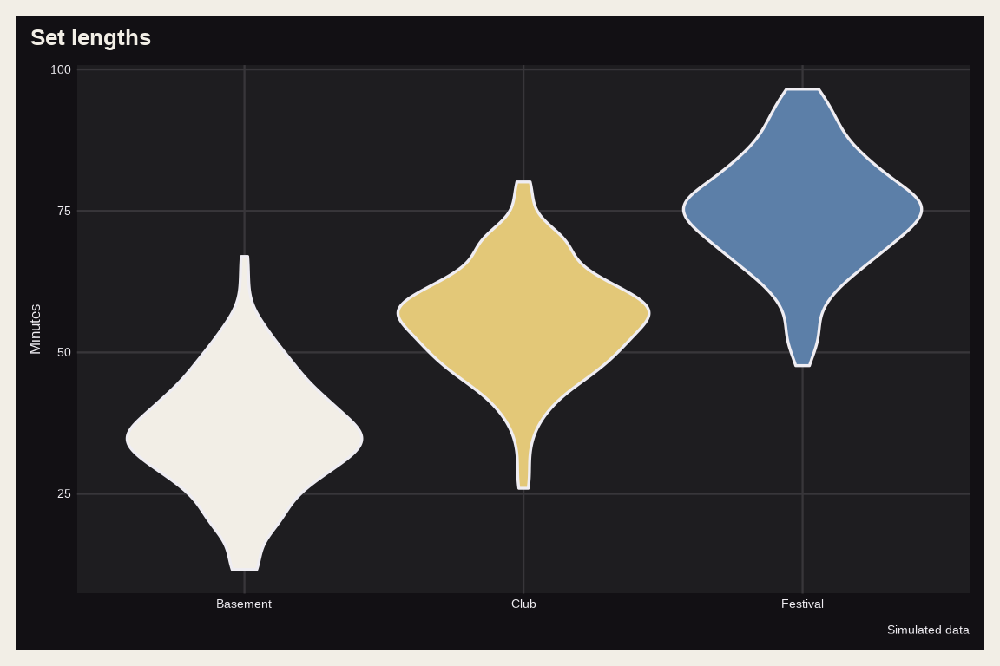
With mode = "light":
last_plot() + theme_indiesleaze(base_size = 13, mode = "light")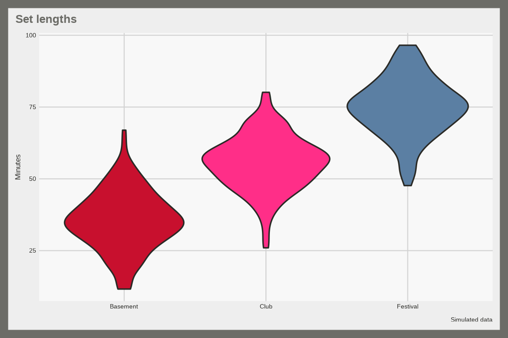
Kidcore
theme_kidcore(): Kidcore is a bright, nostalgic aesthetic of primary colors, beads, stickers, and childhood toys (see Kidcore on Wikipedia). Trend researchers tracked kidcore as early as 2015 among millennials, but Gen Z pushed it further on TikTok. It feeds the generation’s nostalgia for eras they barely experienced. Commentators describe it as escapism and comfort, even a form of self care. Brands now use its bright, toy like look to speak to young audiences.
The palette follows Fisher Price primaries and toy colors: red, yellow, blue, crayon green, tangerine orange, and grape purple. The image shows a heart shaped rainbow bead necklace.
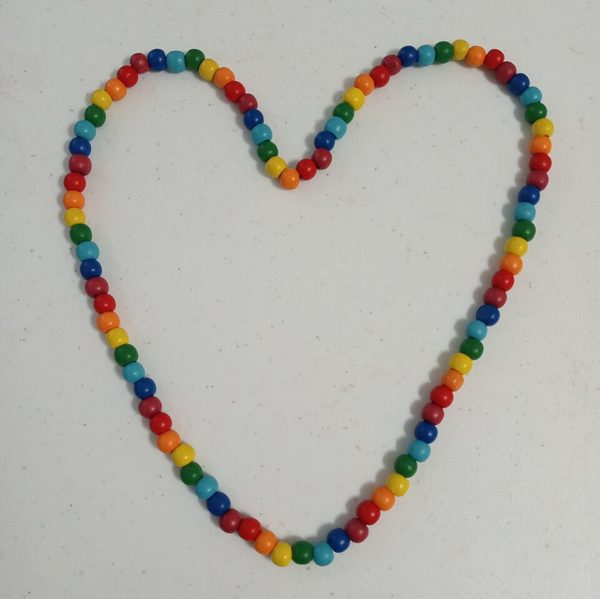

set.seed(2001)
beads <- data.frame(color = sample(c("Red", "Yellow", "Blue", "Green", "Orange", "Purple"), 600, replace = TRUE))
beads$color <- factor(beads$color, levels = c("Red", "Yellow", "Blue", "Green", "Orange", "Purple"))
beads$kit <- sample(c("Bracelet", "Necklace"), 600, replace = TRUE)
ggplot(beads, aes(x = kit, fill = color)) +
geom_bar(position = "fill") +
labs(title = "Bead kit colors", caption = "Simulated data", x = NULL, y = "Share of beads", fill = NULL) +
theme_kidcore(base_size = 13)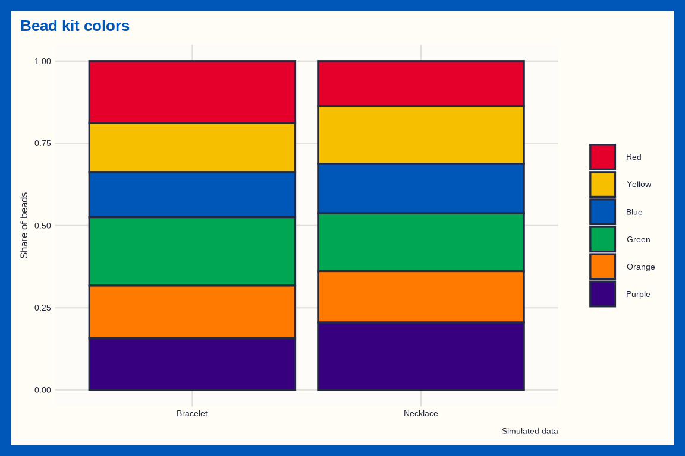
LED strip
theme_ledstrip(): LED strip lights are the adhesive color changing lights that line bedroom ceilings and desks (see LED strip light on Wikipedia). LED strips are often called TikTok lights. Refinery29 tracked the trend on TikTok from 2020 onward and called it Gen Z’s answer to the fairy lights of the 2010s. For teens in bare bedrooms or dorms, a cheap strip of lights is one of the few ways to make a space their own. Recent coverage notes Gen Z lighting turning softer and dimmer.
The palette follows TikTok lights along a dark bedroom wall: hot pink, electric blue, purple, red, cyan, and green. The image shows a strip of cyan LED light under an airplane cabin shelf.
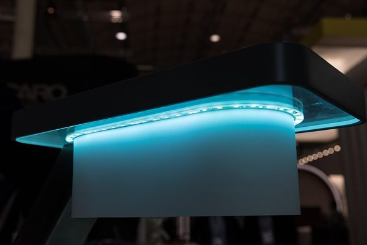
.jpg){kind=link}
set.seed(2016)
leds <- data.frame(setting = sample(c("Static", "Fade", "Music sync", "Rainbow", "Sunset"), 300, replace = TRUE,
prob = c(0.25, 0.3, 0.15, 0.2, 0.1)))
leds$hours <- rgamma(300, shape = 3, rate = 0.8)
ggplot(leds, aes(x = setting, y = hours, fill = setting)) +
geom_boxplot(show.legend = FALSE) +
labs(title = "LED strip settings", caption = "Simulated data", x = NULL, y = "Hours on per night") +
theme_ledstrip(base_size = 13)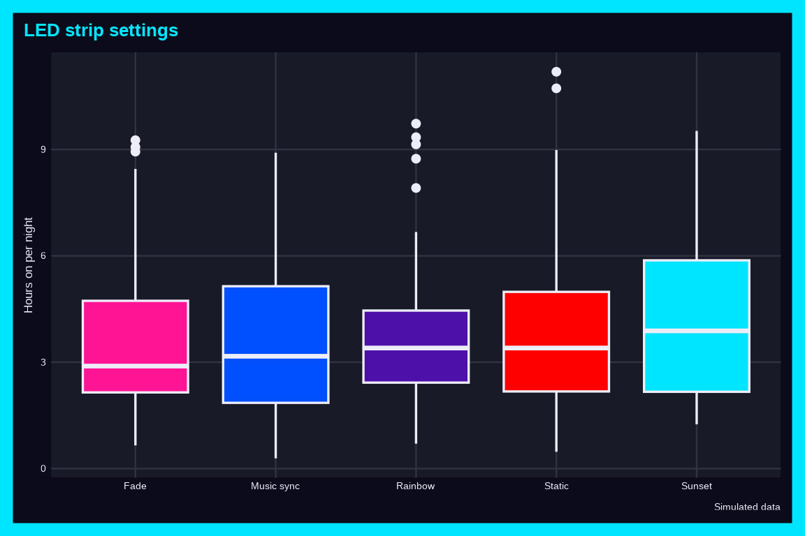
With mode = "light":
last_plot() + theme_ledstrip(base_size = 13, mode = "light")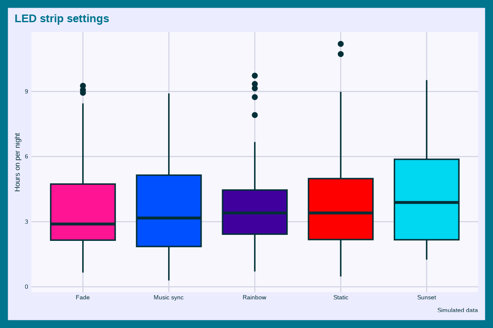
Liminal space
theme_liminal(): Liminal space is an internet aesthetic of empty in between places: hallways, waiting rooms, and closed malls (see Liminal space on Wikipedia). Liminal space images began with a 2019 4chan post that spawned the Backrooms, then spread across Reddit and TikTok. Commentators tie their appeal to childhood memories of malls and schools. Empty streets during the pandemic lockdowns made the feeling familiar. YPulse reported in 2026 that Gen Z loves films and shows set in liminal spaces.
The palette follows empty Backrooms hallways and dated malls: fluorescent yellow, stained carpet beige, pool tile aqua, concrete gray, mall teal, and night parking lot orange. The image shows an empty carpeted hallway in the Stanley Hotel.
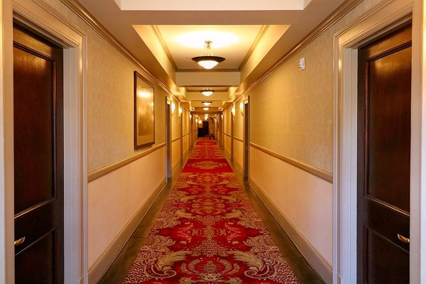

set.seed(2019)
halls <- data.frame(place = rep(c("Hotel hallway", "Empty mall", "Parking garage", "Pool room"), each = 100))
halls$eeriness <- pmin(10, pmax(0, rnorm(400, mean = c("Hotel hallway" = 7, "Empty mall" = 6, "Parking garage" = 5, "Pool room" = 8)[halls$place], sd = 1.5)))
ggplot(halls, aes(x = eeriness, y = place, fill = place)) +
geom_violin(show.legend = FALSE) +
labs(title = "How eerie is it?", caption = "Simulated data", x = "Eeriness (0 to 10)", y = NULL) +
theme_liminal(base_size = 13)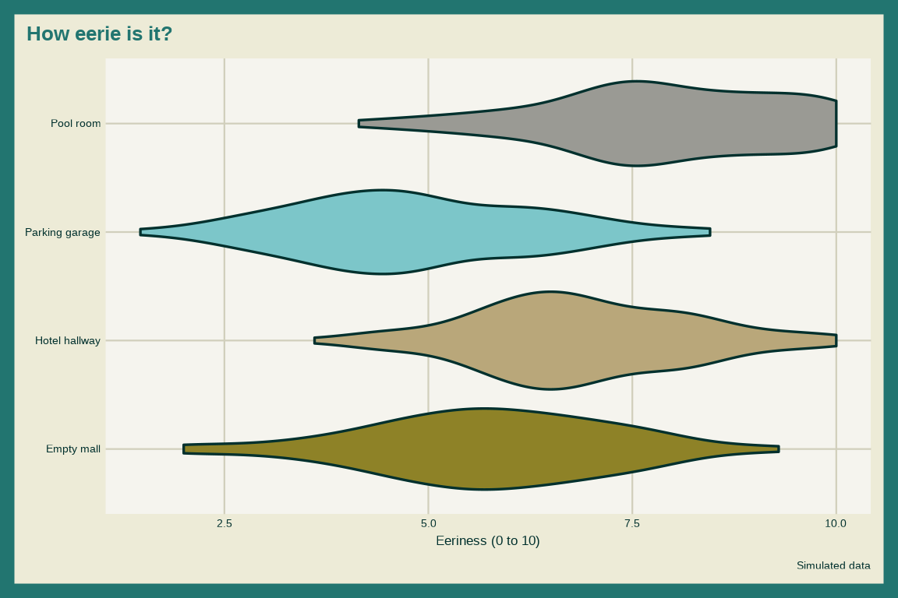
Livestream
theme_livestream(): Livestreaming is broadcasting video in real time, from gaming streams to vlogs filmed on the street (see Live streaming on Wikipedia). Twitch calls its core audience of Gen Z and younger millennials Generation Twitch. Researchers find that Gen Z spends far more time on video than older generations. Marketers report that interaction, not passive watching, keeps them engaged. Emotes act as a shared shorthand, with meanings unique to each streamer’s community.
The palette follows a Twitch stream: Twitch purple, the live red badge, Prime blue, overlay green, ice white chat text, and chat panel gray. The image shows a journalist livestreaming from a railway station.
.jpg){kind=link}
set.seed(2011)
streams <- data.frame(category = rep(c("Gaming", "Just chatting", "Music", "IRL"), each = 150))
streams$viewers <- rlnorm(600, meanlog = c(Gaming = 5, "Just chatting" = 4.5, Music = 3.8, IRL = 4)[streams$category], sdlog = 1)
ggplot(streams, aes(x = viewers, fill = category)) +
geom_histogram(bins = 30) +
scale_x_log10() +
labs(title = "Live viewers", caption = "Simulated data", x = "Viewers (log scale)", fill = NULL) +
theme_livestream(base_size = 13)With mode = "light":
last_plot() + theme_livestream(base_size = 13, mode = "light")Matcha
theme_matcha(): Matcha is finely ground Japanese green tea, now a cafe staple as a latte (see Matcha on Wikipedia). In 2025, BeverageDaily called matcha Gen Z’s avocado toast moment. Its photogenic green suits Instagram and TikTok, where a new flavor or cup design can go viral fast. Gen Z also picks matcha for its perceived health benefits, dairy free options, and lower caffeine than coffee. The whisking ritual signals that you’re in the know.
The palette follows a matcha latte layered over oat milk: ceremonial green, bamboo whisk tan, deep tea leaf, matcha mochi, bright latte green, and a dark wood counter. The image shows a bamboo scoop of matcha powder.

set.seed(2021)
cafe <- data.frame(month = rep(1:12, 3), drink = rep(c("Matcha latte", "Iced matcha", "Matcha lemonade"), each = 12))
cafe$cups <- round(c("Matcha latte" = 120, "Iced matcha" = 80, "Matcha lemonade" = 30)[cafe$drink] +
ifelse(cafe$drink == "Matcha latte", -1, 1) * 25 * sin((cafe$month - 4) / 12 * 2 * pi) + rnorm(36, 0, 6))
ggplot(cafe, aes(x = month, y = cups, colour = drink)) +
geom_line(linewidth = 1) +
scale_x_continuous(breaks = 1:12, labels = substr(month.abb, 1, 1)) +
labs(title = "Matcha sales", caption = "Simulated data", x = NULL, y = "Cups sold", colour = NULL) +
theme_matcha(base_size = 13)Mermaidcore
theme_mermaidcore(): Mermaidcore is a fashion trend of shells, pearls, sequins, and iridescent sea colors (see Mermaid on Wikipedia). By 2023, #mermaidcore had passed 333 million views on TikTok. Writers tie it to Gen Z’s nostalgia, romanticism, and need for escapism and fantasy. It draws on The Little Mermaid, H2O: Just Add Water, and Barbie mermaid films. It reads younger and more whimsical than coastal grandmother, and an edgier offshoot is called mermaid sleaze.
The palette follows iridescent sheer fabrics, pearls, and shells: seafoam, ocean teal, lagoon blue, iridescent lilac, shell pink, and treasure gold on pearl white. The image shows a cutaway nautilus shell showing its pearly chambers (Wikipedia’s Nacre article).

set.seed(1837)
shells <- data.frame(width = rlnorm(300, log(6), 0.35))
shells$chambers <- round(8 + 3 * shells$width + rnorm(300, 0, 3))
shells$beach <- sample(c("North cove", "South cove"), 300, replace = TRUE)
ggplot(shells, aes(x = width, y = chambers, colour = beach)) +
geom_point(alpha = 0.7) +
labs(title = "Shell collection", caption = "Simulated data", x = "Width (cm)", y = "Chambers", colour = NULL) +
theme_mermaidcore(base_size = 13)Photo dump
theme_photodump(): A photo dump is a carousel post of loosely related phone photos from the week (see Camera phone on Wikipedia). A photo dump is a loose Instagram carousel of unposed shots, blurry photos, screenshots, and memes. The format traces back to summer 2020 and spread as celebrities like Dua Lipa and Olivia Rodrigo adopted it. Gen Z uses it to signal authenticity and push back on the pressure to keep a perfect feed. Critics note the effortless look is often carefully curated.
The palette follows a casual camera roll carousel: Instagram magenta, faded denim, sunset orange, washed olive, film grain beige, and blurry night black. The image shows a phone on a tripod recording a sunset over water.

set.seed(2021)
dump <- data.frame(slides = sample(2:10, 400, replace = TRUE))
dump$likes <- round(rlnorm(400, meanlog = 4 + 0.08 * dump$slides, sdlog = 0.6))
dump$posted <- sample(c("Weekday", "Weekend"), 400, replace = TRUE)
ggplot(dump, aes(x = factor(slides), y = likes, fill = posted)) +
geom_boxplot() +
labs(title = "Photo dump likes", caption = "Simulated data", x = "Photos in the carousel", y = "Likes", fill = NULL) +
theme_photodump(base_size = 13)Plushie
theme_plushie(): Plushies (stuffed toys) are collected, displayed, and carried well past childhood (see Stuffed toy on Wikipedia). Gen Z treats plushies as comfort objects tied to mental wellness, and as collectibles like Beanie Babies once were. TikTok hashtags for Squishmallows have passed a billion views. Jellycat’s revenue reached about $252 million in 2022 to 2023 as adult buyers joined in. Critics read the trend as nostalgic stress relief or delayed adulthood.
The palette follows pastel Squishmallows and Jellycat plush: pastel pink, lavender, baby blue, mint, butter yellow, and avocado green. The image shows a replica of an early Steiff teddy bear.

set.seed(1902)
plush <- data.frame(animal = rep(c("Bear", "Frog", "Cat", "Shark"), each = 90))
plush$squish <- rbeta(360, shape1 = c(Bear = 6, Frog = 4, Cat = 5, Shark = 3)[plush$animal], shape2 = 3) * 10
ggplot(plush, aes(x = squish, fill = animal)) +
geom_density(alpha = 0.6) +
labs(title = "Squish ratings", caption = "Simulated data", x = "Squishiness (0 to 10)", fill = NULL) +
theme_plushie(base_size = 13)Slime
theme_slime(): Slime is the stretchy toy that kids make at home and watch in satisfying videos (see Slime (toy) on Wikipedia). The slime trend took off in 2016 and peaked in the summer of slime in 2017. It spread on YouTube and Instagram, and later on TikTok. Teens watch slime videos as ASMR to relax. Gen Z and younger millennials have built slime businesses worth millions, though experts warn about boric acid in homemade recipes.
The palette follows homemade glue slime: slime green, bubblegum pink, glitter purple, electric blue, neon yellow, and clear glue on fluffy white. The image shows green slime poured from a cup.

set.seed(1976)
slime <- data.frame(recipe = rep(c("Glue and borax", "Contact solution", "Cornstarch"), each = 150))
slime$stretch <- rgamma(450, shape = c("Glue and borax" = 9, "Contact solution" = 6, Cornstarch = 3)[slime$recipe], rate = 0.3)
ggplot(slime, aes(x = stretch, fill = recipe)) +
geom_histogram(bins = 30, alpha = 0.8, position = "identity") +
labs(title = "Slime stretch test", caption = "Simulated data", x = "Stretch (cm)", fill = NULL) +
theme_slime(base_size = 13)Thrift
theme_thrift(): Thrifting (shopping at charity and secondhand shops) is the budget and planet friendly way to build a wardrobe (see Charity shop on Wikipedia). Gen Z turned thrifting into a lifestyle and a status symbol. ThredUp data cited by Goodwill shows 83% of Gen Z Americans shop secondhand or would. Their reasons include sustainability, individuality, and money, since many grew up during the 2007 to 2009 recession. TikTok thrift hauls during the pandemic pushed the trend further.
The palette follows racks of secondhand finds: faded denim, worn leather, mustard, rust, olive, and mint on lace cream. The image shows shelves of glassware and goodies in a thrift store.

set.seed(1999)
haul <- data.frame(category = rep(c("Jeans", "Jackets", "Mugs", "Vinyl", "Lamps"), each = 60))
haul$price <- rlnorm(300, meanlog = log(c(Jeans = 12, Jackets = 20, Mugs = 2, Vinyl = 5, Lamps = 15)[haul$category]), sdlog = 0.4)
ggplot(haul, aes(x = category, y = price, colour = category)) +
geom_jitter(width = 0.25, alpha = 0.7, show.legend = FALSE) +
labs(title = "Thrift haul prices", caption = "Simulated data", x = NULL, y = "Price ($)") +
theme_thrift(base_size = 13)Tumbler
theme_tumbler(): Insulated tumblers and water bottles (vacuum flasks) became a status accessory in the 2020s (see Vacuum flask on Wikipedia). Gen Z and TikTok drove the boom in the 40 ounce Stanley Quencher. The #StanleyTumbler tag drew tens of millions of views, and limited color drops caused store stampedes in 2023 and 2024. A cup once marketed to rugged dads became an affordable, reusable status symbol carried across campuses and gyms. Pale Barbie pink became the most coveted shade.
The palette follows the 40 ounce Stanley Quencher color drops: Barbie pink, lilac, seafoam, hammertone green, polished steel, and black on cream. The image shows a red vacuum flask on a cafeteria table.

set.seed(1892)
flasks <- data.frame(hour = rep(0:12, 3), bottle = rep(c("Vacuum flask", "Plastic bottle", "Glass"), each = 13))
flasks$temp <- 4 + (90 - 4) * exp(-flasks$hour / c("Vacuum flask" = 30, "Plastic bottle" = 3, Glass = 2)[flasks$bottle])
ggplot(flasks, aes(x = hour, y = temp, colour = bottle)) +
geom_line(linewidth = 1) +
geom_point() +
labs(title = "Still hot?", caption = "Simulated data", x = "Hours", y = "Temperature (C)", colour = NULL) +
theme_tumbler(base_size = 13)Unboxing
theme_unboxing(): Unboxing videos film someone opening a new product, from phones to sneakers (see Unboxing on Wikipedia). Gen Z grew up watching unboxing videos on YouTube. TikTok and Instagram Reels turned the format into quick, punchy clips full of crinkle and tear sounds. A study of Gen Z smartphone buyers found that the reviewer’s touch and description raised their intent to buy, while visuals alone did not. The appeal mixes product research, a playful tone, and a relaxing sensory payoff.
The palette follows a box being opened on camera: kraft cardboard, tissue paper pink, glossy black, silver foil, and shrink wrap blue on white packaging. The image shows hands lifting a new instrument out of its shipping box.
.jpg){kind=link}
set.seed(2006)
unbox <- data.frame(product = rep(c("Phone", "Sneakers", "Console", "Makeup"), each = 100))
unbox$minutes <- rgamma(400, shape = c(Phone = 8, Sneakers = 4, Console = 10, Makeup = 6)[unbox$product], rate = 0.8)
ggplot(unbox, aes(x = minutes, y = product, fill = product)) +
geom_violin(show.legend = FALSE) +
labs(title = "Unboxing video length", caption = "Simulated data", x = "Minutes", y = NULL) +
theme_unboxing(base_size = 13)Vaporwave
theme_vaporwave(): Vaporwave is a 2010s music genre and meme aesthetic of slowed down mall music, old computers, and pink and teal gradients (see Vaporwave on Wikipedia). Vaporwave started as a 2010s music and meme genre that poked fun at late capitalism. It reaches Gen Z as secondhand nostalgia through TikTok edits, memes, and YouTube playlists. Commentators say Gen Z treats it less as satire and more as sincere emotional expression. Some argue it still belongs more to millennials.
The palette follows pastel gradients over grid floors and neon sunsets: hot pink, electric cyan, mint, lavender, pale yellow, and deep purple. The image shows a vaporwave style Wikipedia logo with windows and planets.

set.seed(2011)
vapor <- data.frame(year = rep(2010:2020, 2), source = rep(c("Smooth jazz", "Mall music"), each = 11))
vapor$samples <- round(c("Smooth jazz" = 20, "Mall music" = 12)[vapor$source] * dnorm(vapor$year, 2014, 2.5) * 6 + rnorm(22, 0, 0.5), 1)
ggplot(vapor, aes(x = year, y = samples, fill = source)) +
geom_col(position = "dodge") +
scale_x_continuous(breaks = seq(2010, 2020, by = 2)) +
labs(title = "Vaporwave samples", caption = "Simulated data", x = NULL, y = "Albums (hundreds)", fill = NULL) +
theme_vaporwave(base_size = 13)Vinyl
theme_vinyl(): Vinyl records outsell CDs again, thanks to collectors who buy albums in colored variants (see Phonograph record on Wikipedia). The Vinyl Alliance calls Gen Z the driving force of the vinyl revival. In its research, 56% of Gen Z buyers cite the look, 37% use records as home decor, and 80% own a record player. Many buy secondhand for environmental reasons. They share their collections on TikTok and Instagram, and they value owning music and a slower way of listening.
The palette follows records and their pressings: vinyl black, label red, translucent amber, clear blue, marbled green, and cardboard sleeve tan. The image shows LP, EP, and single records side by side.

set.seed(1948)
records <- data.frame(year = rep(2010:2024, 2), format = rep(c("Vinyl", "CD"), each = 15))
records$sales <- ifelse(records$format == "Vinyl", 3 * exp((records$year - 2010) * 0.18), 100 * exp(-(records$year - 2010) * 0.17)) + rnorm(30, 0, 1)
ggplot(records, aes(x = year, y = sales, colour = format)) +
geom_line(linewidth = 1.2) +
labs(title = "Vinyl's comeback", caption = "Simulated data", x = NULL, y = "Albums sold (millions)", colour = NULL) +
theme_vinyl(base_size = 13)Voice note
theme_voicenote(): Voice notes are short recorded messages sent in a chat instead of typing (see Voicemail on Wikipedia). Voice notes boomed during the pandemic and became Gen Z’s favorite way to keep in touch, partly because of phone call anxiety. Preply found that 84% of Gen Z use them, compared with 47% of baby boomers. Forty percent of users say a voice note can replace a call. Still, 31% of Gen Z find incoming voice notes inconvenient, and many long ones go unheard.
The palette follows a voice note bubble: WhatsApp green, iMessage blue, waveform gray, record red, dark mode charcoal, and chat bubble green. The image shows a diagram of how a voicemail system routes and stores messages.

set.seed(1979)
notes <- data.frame(sender = rep(c("Best friend", "Mom", "Group chat"), each = 200))
notes$seconds <- rlnorm(600, meanlog = log(c("Best friend" = 45, Mom = 90, "Group chat" = 20)[notes$sender]), sdlog = 0.6)
ggplot(notes, aes(x = seconds, fill = sender)) +
geom_histogram(bins = 30) +
scale_x_log10() +
labs(title = "Voice note length", caption = "Simulated data", x = "Seconds (log scale)", fill = NULL) +
theme_voicenote(base_size = 13)Weirdcore
theme_weirdcore(): Weirdcore is an internet aesthetic of low quality images, liminal spaces, and unsettling captions (see Weirdcore on Wikipedia). Gen Z led weirdcore on TikTok, YouTube, Instagram, and Discord, and it surged around 2021. It recycles late 1990s and 2000s images that many in Gen Z barely remember. Commentators read it as an outlet for anxiety, hazy memory, and despair. It is a rough counterpoint to polished clean girl feeds.
The palette follows low quality surreal images: fluorescent hallway yellow, liminal pool blue, grass green, caption red, washed sky blue, and CRT black. The image shows a grassy grid under a black sun with the caption “You must escape this simulation”.

set.seed(2021)
weird <- data.frame(x = rnorm(300), y = rnorm(300))
weird$feeling <- cut(sqrt(weird$x^2 + weird$y^2), c(0, 0.8, 1.6, Inf), labels = c("Familiar", "Uneasy", "Wrong"))
ggplot(weird, aes(x = x, y = y, colour = feeling)) +
geom_point(size = 2, alpha = 0.8) +
coord_equal() +
labs(title = "Have you been here before?", caption = "Simulated data", x = NULL, y = NULL, colour = NULL) +
theme_weirdcore(base_size = 13)Wired earbuds
theme_wiredbuds(): Wired earbuds made a comeback as a style statement and a break from charging (see Headphones on Wikipedia). Gen Z calls AirPods passé and wears the cord as an analog statement against always on tech, alongside dumbphones, instant cameras, and vinyl. Bella Hadid, Harry Styles, and Charli XCX have all been seen in wired earbuds. Searches for wired headphones hit 2.6 million in April 2025, up 68% in one month. Practical perks help: no charging and nothing to lose.
The palette follows corded earbuds: Panasonic red, lilac, mint, cable gray, and black against Apple white. The image shows a pair of white wired earbuds on a wooden table.

set.seed(2001)
buds <- data.frame(type = rep(c("Wired", "Wireless"), each = 200))
buds$hours <- ifelse(buds$type == "Wired", rnorm(200, 3, 1), rnorm(200, 2.5, 0.8))
buds$tangles <- ifelse(buds$type == "Wired", rpois(200, 3), 0)
ggplot(buds, aes(x = hours, fill = type)) +
geom_density(alpha = 2/3) +
labs(title = "Daily listening", caption = "Simulated data", x = "Hours per day", fill = NULL) +
theme_wiredbuds(base_size = 13)Fonts
The themes use title fonts that ship with macOS and fall back to "sans" when a font isn’t found: American Typewriter, Andale Mono, Apple Chancery, Arial Black, Arial Rounded, Baskerville, Big Caslon, Bradley Hand, Chalkboard, Chalkduster, Cochin, Comic Sans MS, Copperplate, Courier New, Didot, DIN Condensed, Gill Sans, Impact, Krungthep, Luminari, Marion, Marker Felt, Noteworthy, Optima, Rockwell, SignPainter, Silom, Skia, Snell Roundhand, Superclarendon, Tahoma, Times New Roman, Trebuchet MS, and Verdana.